Python is an interpreted, object-oriented, high level programming language. Python's simple, easy to learn syntax emphasises readability. It supports packages and modules with several specifically designed for data analysis.
This uses Coursera data management and visualisation course, by Wesleyan university
DataCamp offer many free online courses for learning data analysis. To start with the basics skills of the programming language Python you will start the Python course offered on DataCamp. Signup and login to begin the course. This module does not expect you to have this completed, it is simply a good starting point to pick up the basic skills to help with this module. You will be provided with the code you need to complete the lab work. However for the assignment it would be a good idea to improve your python skills beyond what the labs provide.
https://www.datacamp.com/learn-python-with-anaconda
Another similar online course is provided by codeacademy.
https://www.codecademy.com/learn/python
The data school website has some useful posts on python and the use of pandas for data analysis. Here is a good quick reference guide for python:
Python is a programming language, and you'll be writing your Python code in the programming environment called Spyder. The Anaconda distribution simplifies the installation process by including Python, Spyder, and other packages and tools in one installation.
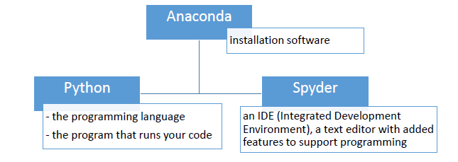
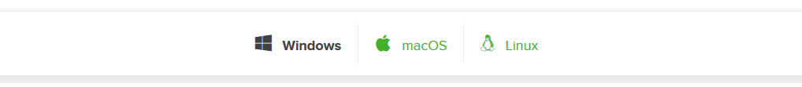
Click on the appropriate 32/64-bit installer of Python 3.7
For Mac OS download the graphical installer
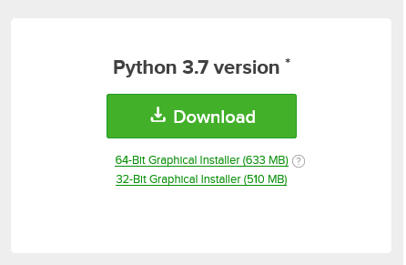
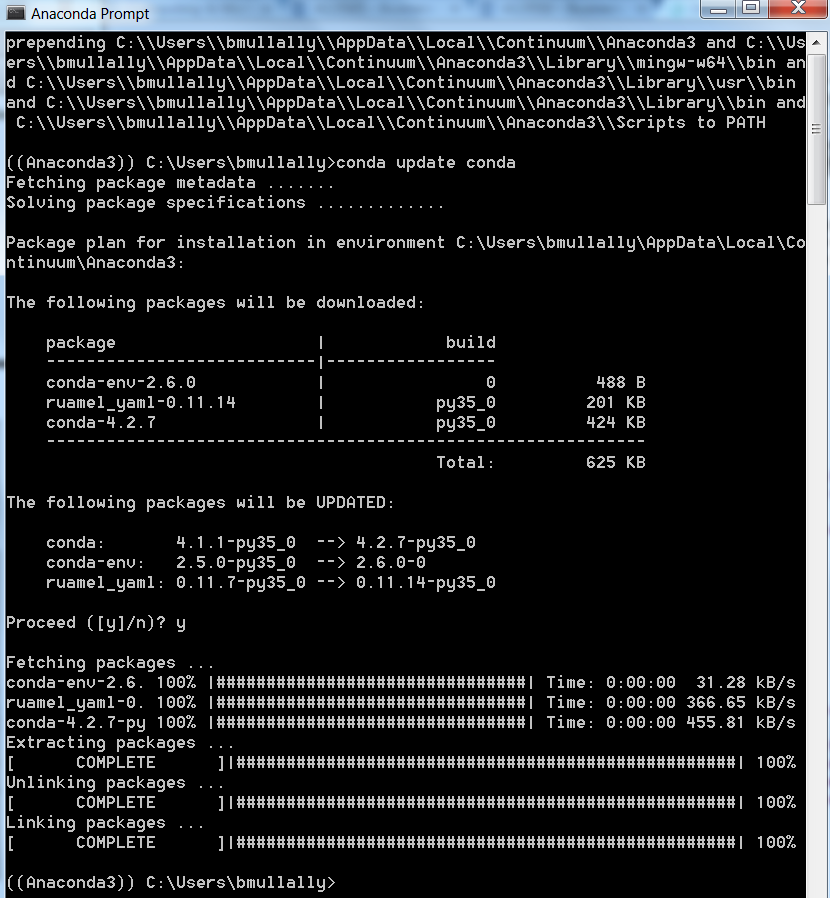
You will write your programs and run them inside the Spyder IDE.
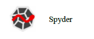
On Windows, in the search box on the start menu, type Spyder. Click on the program. On a Mac, use Spotlight to find the program Launcher. Click Launch on the Spyder-app entry.
After Spyder has launched you should see an interface that is organised into multiple windows (marked with red rectangles below) each of which has multiple tabs (marked with green rectangles below).
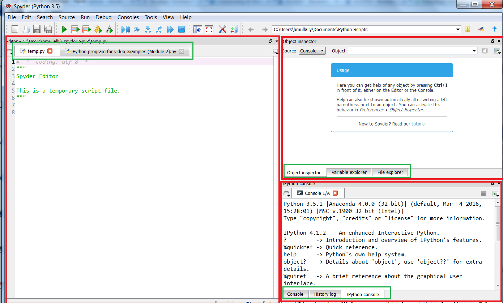
The default screen has three windows visible: Editor, Inspector, and Console. If you accidently close a window or change the layout, you can revert to the default by clicking "View" on the menu bar and then clicking "Reuse Previous Layout" or in "Panes" choose the pane you just accidently closed.
Editor: where you write and save sequences of commands, essentially where you will write your full program. In the sample that shows in the editor, anything after # is a comment, meaning that Python will ignore that text. Three double quotation marks are a special type of comment that spans multiple lines.
Console: where Python runs your code. Spyder offers two choices for a console, a basic one and an IPython (Interactive Python) console. It is the IPython console we want to use. The prompt (where you can type in a command) for an IPython console is :
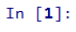
Object Ispector: On starting Spyder, the object inspector just gives you a link to the tutorial (this can be useful if you want to know more details about using Spyder). The rest of the time, this window will continue to give you information about a function such as the documentation from the help files and tells you what parameters the function takes.
Variable Explorer: shows you the value and type of any variables you have created. This is useful when you are trying to debug your code.
The first task is to set your working directory. This is done by clicking on the folder icon in the top right corner above the object inspector.
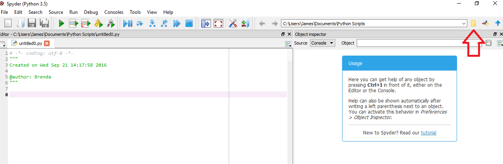
Browse to the folder where you wish to keep all of your python files and data files. This the folder from which python files are executed and where you can import and run data sets.
The program/script editor works similar to other editors as well as colour coding your program to help you write and debug it.
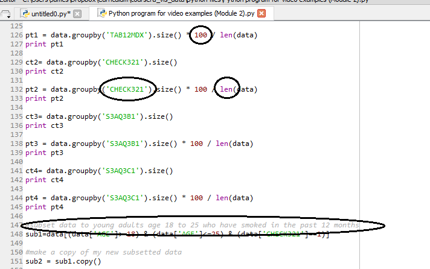
Strings in Python consists of alphanumeric or other characters enclosed by single or double quotation marks.
Comments start with a number sign # or a £ symbol and they are not analysed by Python.
If you write a line of code that is incorrect, you will probably be provided with an exclamation point and a red circle ot the left of a line or lines of code. Hovering over the exclamation point with your mouse provides code analysis and helps you to debug your program.
Sometimes the analysis is helpful and other times it simply indicates that you have written invalid syntax.
Python is case sensitive, so be sure to always use the correct capitalisation when you write your programs.
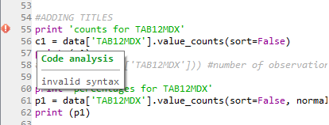
As the first line of your Python program, you will need to import any libraries that you will be using to conduct data analysis. Common libraries used for data analysis in Python include Pandas and NumPy.
import pandas
import numpyIn the blank editor type in the two import statements.
Libraries, sometimes called packages, are collections of Python functions that others have written to add on to the basic functionality that is built into Python.
Next are a few basic steps that all statistical packages require when you begin to write a program.
First you will load the data that you'll be working with, which is the common form of a comma separated values file and has the extension .csv. This step is also sometimes called reading in or calling in the data set.
To load in data you first must download the file.
Save the file into the working directory you setup in this step.
nesarc codebook Enter the following code to load the data file:
nesarc_data = pandas.read_csv('nesarc_pds.csv', low_memory=False)nesarc_data is the name I have chosen to call our data frame (Python object). You can call it anything you wish, throughout this and future labs we will use the name nesarc_data. We set the data frame equal to the function pandas.read_csv to tell python that we will be reading in a .csv file using the Pandas library.
In Python function names are followed by a set of ().
The name of the data file nesarc_pds.csv is included within the parenthesis, and also within either single or double quotation marks. The name of the data set must match exactly the actual file name.
It is a good idea to add parameter low_memory and set it to false. Without this it is common to get a warning when you run your program because Pandas tries to determine what data type to set for each variable by analyzing the data in each column, this uses a lot of memory. Setting this parameter can increase efficiency when running the program.
All of the code you write after this line will use this data set.
Save the program by choosing File->Save. The default name is Untitled but you should rename it Lab04. It will be saved to the working directory.
Add the following code and we can see the number of rows (observations/individuals) in the data set, and the number of columns, that is variables.
print (len(nesarc_data)) #number of observations (rows)
print (len(nesarc_data.columns)) # number of variables (columns)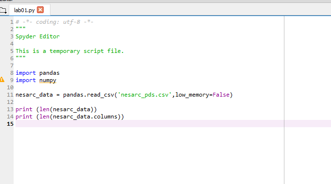
If we save and run this program by highlighting the code and selecting, run selection or current line within the Run menu, you can see here that Nesarc includeds 3,008 variables measured on 43,093 individual participants.
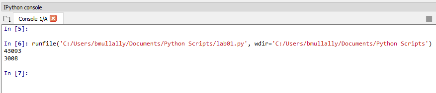
I'm interested in looking at the association between how much a person smokes, that is the quantity and frequency of smoking, and the presence or absence of nicotine dependence.
To investigate this we need to look in detail at the code book for the nesarc data set.
This document contains a table of contents that sets out the different sections of interest within the dataset. For this lab we will be looking at section 3A or page 82 for Tobacco use and dependence. It describes each variable associated to Tobacco use and dependence. The final section of the code book also provides information on diagnosis such as nicotine dependence.
It is the name of the variable (e.g. S3AQ1A) we are interested in rather than the longer descriptive name (e.g. Ever Smoked 100+ Cigarettes). For each variable the code book also shows you the counts for each possible value per variable. For example for S3AQ1A the possible values are from 5 to 80, 99 means an unknown age, and BL or blank is not applicable or unknown.
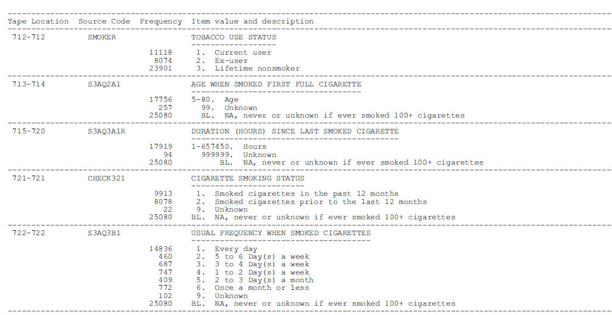
To generate frequency distributions we use the value counts function. It is part of the Panda's library. We always need to load this library each time you run Python in order to use the function. We have done this already in the first line of the program.
Use the value counts function to generate frequency counts for the nicotine dependence in the last 12 months variable (TAB12MDX):
c1= nesarc_data["TAB12MDX"].value_counts(sort=False)This statement uses the value_counts function to generate a frequency count for the variable called TAB12MDX (surrounded by single or double quotation marks wihtin square brackets) in the nesarc_data set. It places the analysis in the variable c1. Each variable only exists as part of a data set so we must tell python what data set we are analysing. Dot notation should familiar to you. Functions allow settings to be specified inside the parenthesis, this function includes sort=False so that the data is sorted in the order of the original values rather than by the actual counts.
To get percentages for each value based on those counts. The code is similar, we can the new variable p1 and we also include the setting normalize-True within the functions parenthesis separated by a comma.
p1= nesarc_data["TAB12MDX"].value_counts(sort=False, normalize=True)To get counts or percentages for each variable we are interested in separate lines of code need to be written. We should also pair each line of code with a print line of code.
c1= nesarc_data["TAB12MDX"].value_counts(sort=False)
print (c1)
p1= nesarc_data["TAB12MDX"].value_counts(sort=False, normalize=True)
print (p1)Save and run this program.
You can confirm the correct counts by looking in the code book for the variable TAB12MDX (page 475).
Now write the code necessary to find the counts and percentages for the following variables:
Read in your code book to see what these variables relate to.
From the File menu choose Save and then Run from the Run menu.
Your code from the previous step should look like this:
c1= nesarc_data["TAB12MDX"].value_counts(sort=False)
print (c1)
p1= nesarc_data["TAB12MDX"].value_counts(sort=False, normalize=True)
print (p1)
c2= nesarc_data["CHECK321"].value_counts(sort=False)
print (c2)
p2= nesarc_data["CHECK321"].value_counts(sort=False, normalize=True)
print (p2)
c3= nesarc_data["S3AQ3B1"].value_counts(sort=False)
print (c3)
p3= nesarc_data["S3AQ3B1"].value_counts(sort=False, normalize=True)
print (p3)
c4= nesarc_data["S3AQ3C1"].value_counts(sort=False)
print (c4)
p4= nesarc_data["S3AQ3C1"].value_counts(sort=False, normalize=True)
print (p4)When you run this code the distribution counts and percentages will be displayed in the console window. It is not very easy to determine one variable from the next. To help with the output for the reader it is useful to place a further print line of code before the counts and percentages are printed out.
print('counts for TAB12MDX - nicotine dependence in the past 12 months, yes=1')This line of code should be placed just before the first line seen above.
Do this now for each variable c2, p2, c3, p3, c4 and p4. Use the code book to find the long description for each variable.
Save your work. Test this by highlighting just the last three lines of code and choose run selection or current from the run menu.
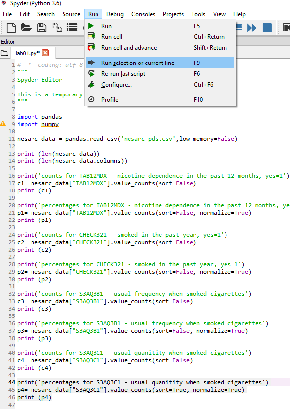
You should now see just the 'percentages for S3AQ3C1 - usual quantity when smoke cigarettes' with the percentages shown for each quantity.
As with most programming languages there are multiple ways of doing the same task. We could use the function groupby instead of value_counts.
ct1 = nesarc_data.groupby('TAB12MDX').size()
print(ct1)This will output the counts grouped by the values in the Nicotine Dependence variable TAB12MDX which we know to be 0 and 1
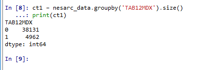
To ask for the percentages with the groupby counts, the code is similar.
pt1 = nesarc_data.groupby('TAB12MDX').size() * 100 / len(nesarc_data)
print(pt1)The console window shows the commands, output and error messages. Run all of the code you have written. There should be no error messages in your console window.
Commonly a variable name may be mistyped and this error shows in the console as KeyError: 'S3Ac3B1'
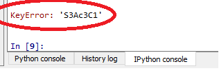
If you do find errors then go back to your program and correct the errors, save the code and run again.
Our variables names are a bit cryptic and thus we might want our print statements to be a bit more interpretable. The print function in our code is just asking for the text strings, we can change them to read however we would like. We can see that we added additional information as headers for each variable.
For variable TAB12MDX nicotine dependence in the past 12 months the code book tells us that one means yes and zero means no. We can see in our counts that we have 38,131 resondents that have no nicotine dependence, when we look at the percentages output that is 88.4% of the sample. While 4,962 or approximatley 11.5% of respondents do have a nicotine dependence.
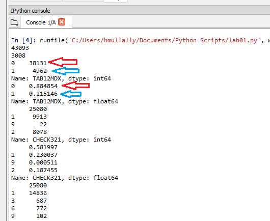
When you scroll down to usual quantity when smoked cigarettes, S3AQ3C1, you find the values are displayed in an incorrect order. This is happening because Python is reading the values as strings or objects rather than as numeric because it encountered empty cells when reading the column for that variable. To correct this, we can add a line of code to our program converting the variable to numeric before calling on the value_counts function.
nesarc_data['S3AQ3C1'] = pandas.to_numeric(nesarc_data['S3AQ3C1'],errors='coerce')This line of code should come after the dataset is loaded and before the variable is used to produce output. Add one of these lines for the S3AQ3C1 variable used in our program. Now set the sort option to True for each count and percentage then save and run your program. Each output should be displayed in order of the greatest count or percentage first going in descending order.
Remember the importance of comments in all programming. Python is no different. The # symbol is used to comment out text and it is good practice to add a line of commentry to sections of your code explaining what each section is doing. They help to keep track of decisions you have made and actions you take.
Remember to save each time you change your program.
Add commentry to your code now. They should appear in grey in your program.
It can be difficult to always type variable names in the correct case, some may be in upper case and others in lower case. Python is case sensitive so this can give your program unnecessary errors. You can use the map function to convert all variables in your dataframe to upper or lower case. Place this line of code just after you have loaded the data set.
nesarc_data.columns = map(str.upper, nesarc_data.columns)
nesarc_data.columns = map(str.lower, nesarc_data.columns)To avoid run time error messages you can put the following set_option line of code in your program usually place it after you load the data set.
pandas.set_option('display.float_format',lambda x:'%f'%x)Pandas documentation is available online for you to investigate futher options and settings for all the functions we use.